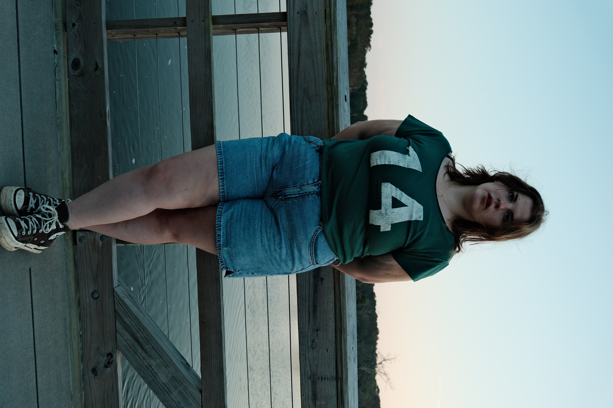

Sydney Wentz
Writer of fiction, poetry, and essays.
Sydney Wentz is from Oak Ridge, North Carolina, but really, she's from the creek behind her grandparent's house, pancake batter, a bird's nest, squeezed between her mother and father, and the sound that reverberates from the body of an acoustic guitar.
She writes across poetry, CNF, and fiction, but is challenged and excited by speculative fiction and experimental forms of writing so that her writing is paying attention to the part of her that doesn't have words anyone else would understand.
You can find her writing with fumbling fingers in the middle of the night with her cat, Biscuit, or at a new coffee shop every day.